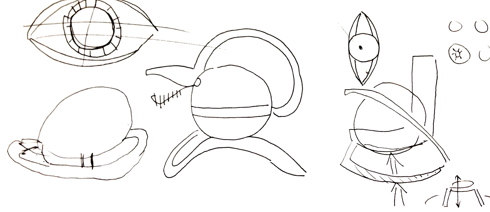
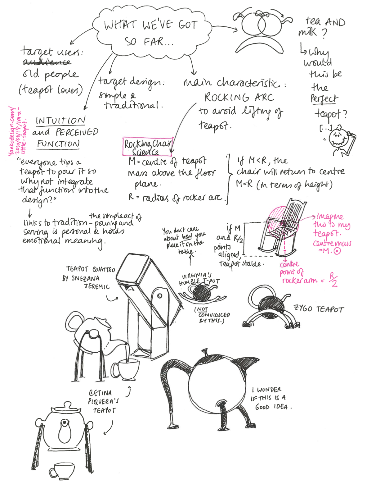
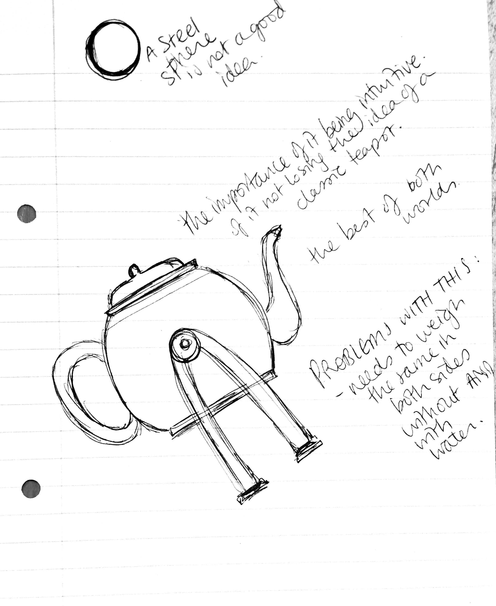
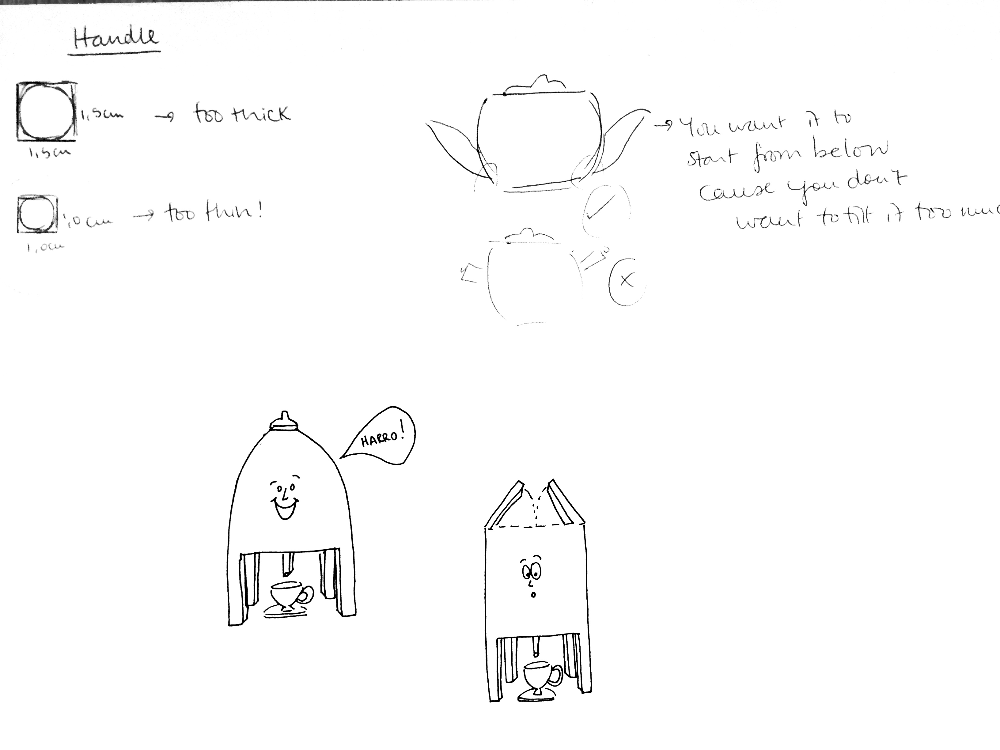
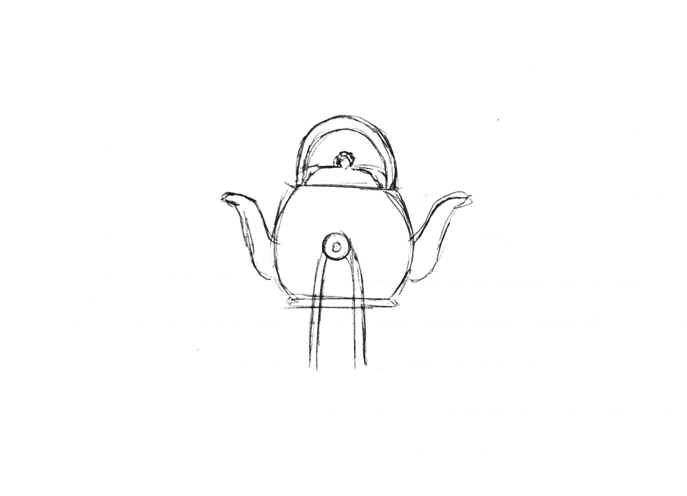
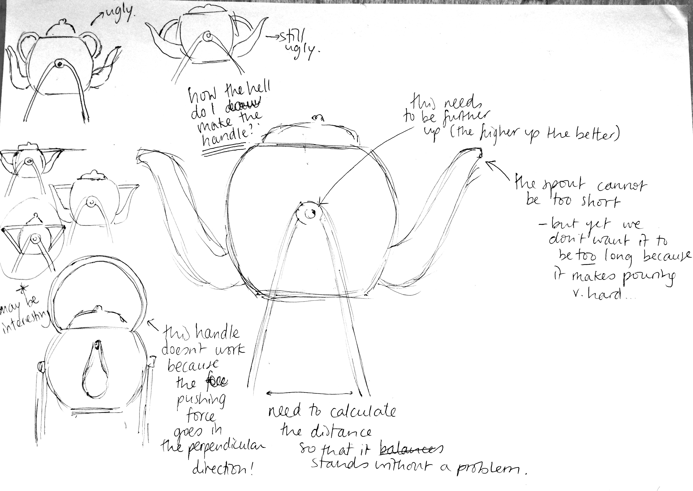
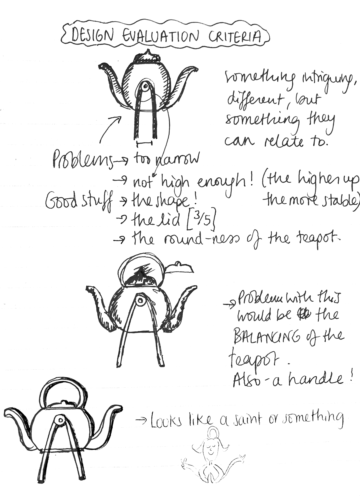
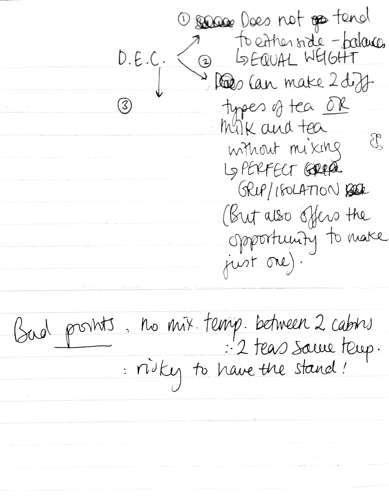

SCHEMATIC DESIGNS
Click on a subsection to know more Getting to the Perfect Teapot | The Perfect Teapot
Getting to the Perfect Teapot
Below are some sketches and brainstorm-doodling in order to arrive at something that's good enough to be an X teapot.








